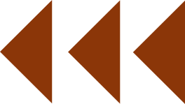

Précédent

Les mathématiciens s’emparent alors du problème : peut-on obtenir un tracé parfaitement rectiligne à partir d’un mouvement circulaire ?
C’est la création d’une « géométrie articulée ». Elle cherche à résoudre le problème de la « règle ».
La règle est l’un des deux outils de base de la géométrie euclidienne, avec le compas. Elle est par définition rectiligne, mais comment obtenir cette règle ?
Les mathématiciens s’appliqueront à déterminer comment, à partir d’un système mécanique de pivots, on peut obtenir une ligne parfaitement droite.
Suivant